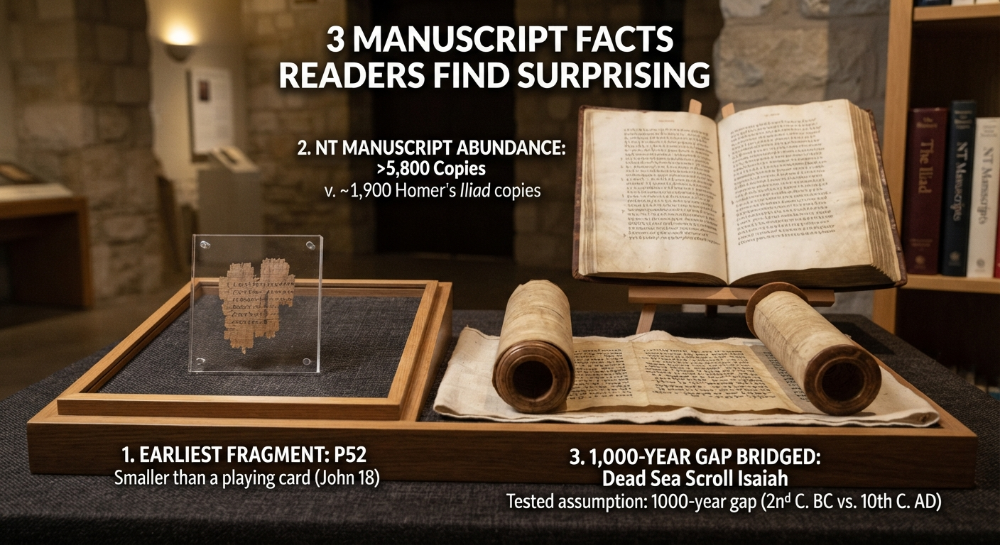

Monday's post made the case for why the New Testament's manuscript record holds up under real historical scrutiny. If you only have two minutes today, here are three specific facts from that research that tend to surprise people most — even people who've heard the general argument before.
Rylands Library Papyrus P52 — the oldest known fragment of any New Testament text — is a scrap of papyrus roughly the size of a credit card, containing just a few verses from John 18. It was found in Egypt, not Israel, which tells us the Gospel of John had already spread far beyond its place of origin by the time this copy was made. Small as it is, its dating to the first half of the second century puts it within a single lifetime of John's Gospel being written.
The Iliad is widely considered the best-attested secular text from the ancient world, with around 1,900 surviving manuscripts. The New Testament survives in more than 5,800 Greek manuscripts alone — before even counting the tens of thousands of copies in Latin, Coptic, and Syriac. No historian doubts we have a reliable text of Homer. The New Testament's evidence is stronger by a wide margin.
Before 1947, the oldest complete Hebrew Old Testament manuscripts dated to around the 10th century AD. Then the Dead Sea Scrolls turned up a complete scroll of Isaiah dated roughly a century before Christ — a thousand years older than anything scholars had previously compared it to. When the two were placed side by side, they matched with remarkable consistency, differing mostly in spelling and minor grammar. A tradition many assumed had drifted over a millennium of hand-copying turned out to have been preserved with real care.
None of these facts settle every question a skeptic might raise — but they're a good place to start the conversation, and they're the kind of specific, checkable detail that a vague "the Bible has been changed over time" claim rarely survives contact with.
This post draws directly on the case made in full in 777 Reasons the Bible Can Be Trusted.
Learn More Buy Now